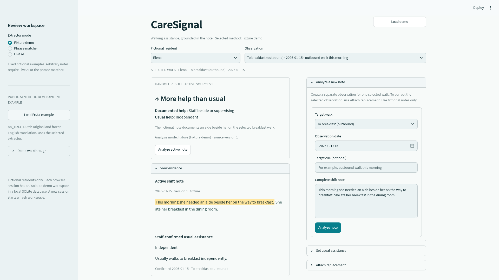
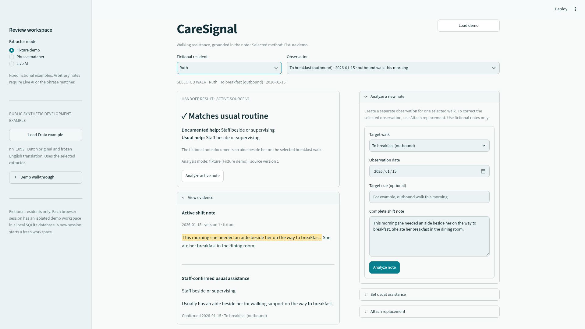
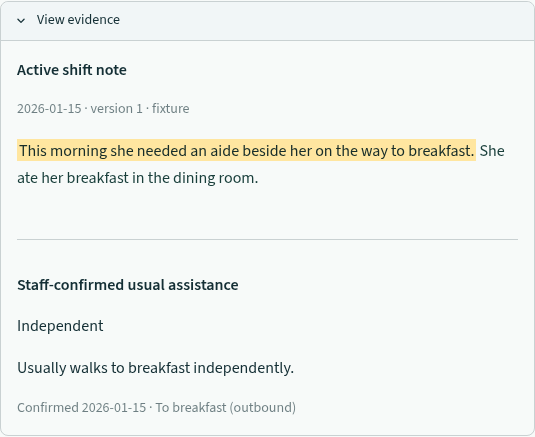
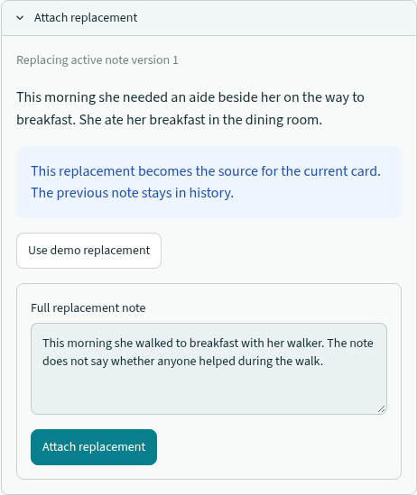
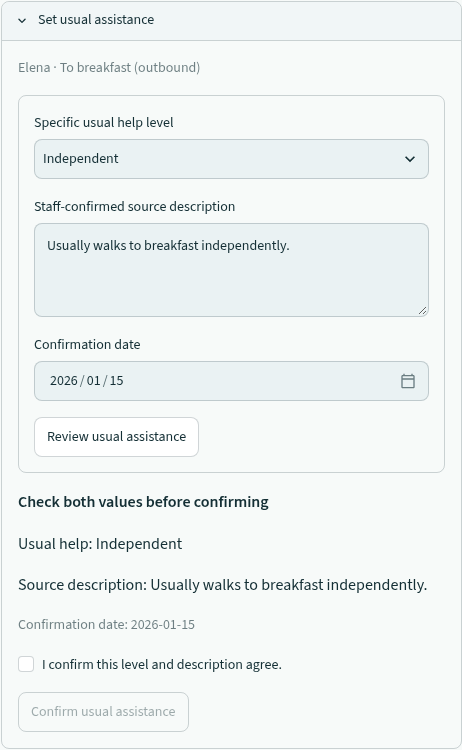
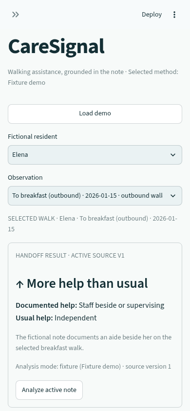

What the note documents. The words behind the finding.

Elena: documented supervision compared with her confirmed independent breakfast routine. This is a fixed fictional fixture.
Same note, different confirmed baseline
Ruth’s card matches her usual routine
The model reads the note; code compares the documented and confirmed levels for that resident and walk.

Keep the note text visible while comparing Elena and Ruth. The confirmed baseline changes the comparison.
Traceability and corrections
Show the source words, then replace the source
Amber evidence belongs to the active note. A replacement becomes the new source after explicit submission.

03 · Exact evidence The highlighted quote comes from the active note. The usual-assistance description and confirmation date stay separate.

04 · Full replacement The original revision is visible while a full new note is prepared for explicit submission.
One active source, preserved history
Clear the old flag and retain both revisions
A walker alone leaves human help unspecified. Baseline levels require explicit staff confirmation.
05 · Current and corrected versions The walker-only replacement leaves human help unspecified. Version 2 is Active; version 1 stays Corrected in history.

06 · Review before confirmation Review the specific help level, description and date; check agreement before the confirmation action.
UI and feature reference
Readable context, result and evidence at phone width
Use actual screenshots as the design authority; editorial labels stay outside the app image.

One selected event
Resident, walk context and observation date stay visible.
Active note text and a separate confirmed usual-assistance record.
Explicit source replacement
New active revision; original preserved as corrected history.
Implemented beyond these images
Gemini/OpenAI options, public Fruta original text, retryable provider errors and reproducible evaluation.
Visual direction
Off-white, pale teal, dark teal text, amber highlights, clean system sans-serif.
Not product claims: diagnosis, fall prediction, treatment recommendations, clinical validation or integration with clinical systems.
90-second production plan
Explain the working workflow, then state the scope
Target: 1080p, 16:9, 30 fps, calm narration and readable captions. Use supplied voiceover and SRT as editable timing assets.
Time
Scene
What to communicate
00–13
Title + real UI
Selected-event documentation review, without clinical prediction.
13–18
Fixture disclosure
Clearly label the fixed fictional walkthrough.
18–32
Elena
Staff beside or supervising versus an independent usual routine.
32–44
Ruth
Same note; supervision baseline; matches usual routine.
44–58
Evidence
Exact quote, active revision/date and separate confirmed source.
58–75
Replacement + history
Submit the replacement; Unclear replaces the flag; retain version 1.
75–84
Supporting features
Explicit baseline confirmation, mobile layout and Gemini option.
84–90
Closing statement
This project is a prototype and is not medical advice.
Optional metrics, only with scope: original 24-note Gemini label result 11/24 versus phrase 14/24. Revised prompt: 21/24 labels and 16/24 joint on a same-note post-hoc replay, not independent validation. The sample is synthetic and coding-agent-reviewed.
Output rule: render an actual MP4 only where tools support it; otherwise provide a runnable editing project or timed editor-ready package. The supplied 29.4-second silent clip is source footage, not a finished narrated film.